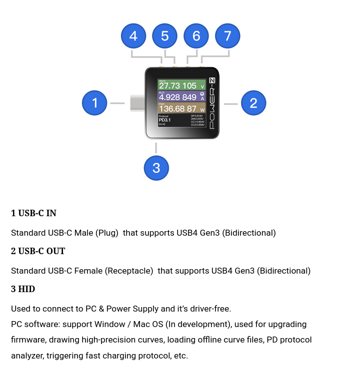
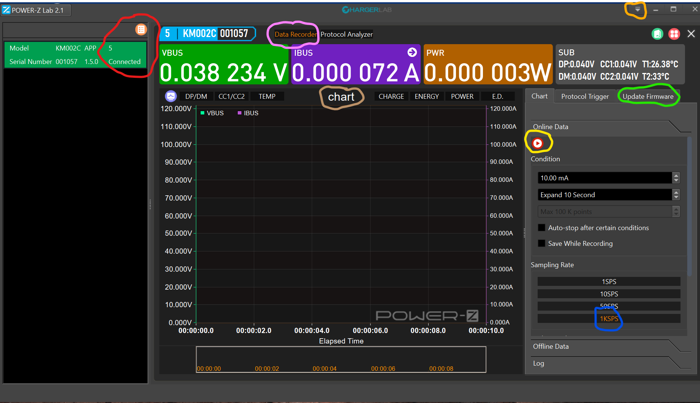

This is a trial web page documenting the Power-Z KM002C sold by ChargerLab . Obviously ChargerLab are based in China (or maybe Hong Kong) and the primary documentation is written in (simplified) Chinese. There is documentation in English about the KM002C tester itself (follow the ChargerLab link above then click the Power-Z tab) but to date there seems to be little English documentation of the accompanying Windows (7+) PC Software (hereafter called the app).
The purpose of this page is to collect information about the KM002C from the perspective of the app. Without feedback and additional information, this page will become stale and probably be removed. Feedback can be sent for those with GitHub accounts by adding Issues and/or Pull request to this project. Those without an account can use email to the address at the bottom of this document.
Here is a screenshot of the tester (hereafter called the dongle) from ChargerLab’s documentation:

Given that ChargerLab define the USB-C Male (Plug) as “in” then the positive sense of current is moving from “in” to “out”. So USB-C sources such as the Apple 140 Watt USB-C Power Supply (PS) with a USB-C receptacle mounted on the body of the PS will show positive current while power supplies with a captive cable with a male USB-C plug at the end of that cable will show negative currents.
When using the KM002C dongle in stand-alone mode then the HID connector can be connected to any USB source, as long as it can supply 100 milliAmps or more. The HID capability is only needed when controlling or monitoring the dongle with Windows 7+ app. When not using the app, a small USB-C power bank (i.e. battery) should be sufficient to power the dongle for long enough to do plenty of measurements with the dongle.
1. Rotate the display direction in the main menu
2. Back
3. Press and hold it when power off, you can enter the DFU mode
5 Confirm
1. Long press: Enter Settings
2. Short press: Confirm
6 Left
1. Switch four different interfaces in the main menu
2. Modify parameter values in the setting
7 Right
1. Switch four different interfaces in the main menu
2. Modify parameter values in the setting
3. Long press "Right" on startup when HID is disconnected to power (Flip the USB-C connector if it doesn't work)
Release CC pull-down resistor, it'll shut down after 5 seconds
Keep CC pull-down resistor, enter the charging protocol
Attention: Please use this function under the guidance of professionals, otherwise the short circuit caused by the CC1 and VBUS of the cable may damage the tester.
The above button description for the dongle is cut and paste from ChargerLab’s documentation. Noteworthy is the long press on the right button (7) when power initially flows between USB-C IN (1) and USB-C OUT (2). In that case the dongle will power itself from Vbus flowing between connector (1) and (2) . It is fun documenting this device since I’m pretty sure my KM002C did what was just described. Retesting the dongle with 1.5.0 firmware, the long press on the right button (7) does nothing at power-up. Now it seems that if there is no HID power, the dongle will automatically take power from Vbus passing between connector (1) and (2), if it is available.
Powering the dongle from the PD connection being monitored is not ideal. The reason is whenever the PD protocol passes through a state that drives Vbus to Vsafe0 then the dongle itself will reset. That can be very frustrating, so powering via the HUB connector (and _not_ doing a long press on the right button (7) during power-up) is recommended. Also recommended is fitting a right-angle USB-C adapter (male to female) to the HID connector (3) so, as shown in some ChargerLab videos, the dongle can be held in one hand with the HID connector at the bottom with your thumb on the right angle USB-C adapter, that will leave your fingers (relatively) free to press the 4 control buttons which should now be facing upwards. [The white glove, as used by ChargeLab, is optional :-)]
Another issue with taking power from Vbus is that if Vbus is at or near 48 Volts a “low dropout (linear) regulator” (LD0) generating 3.3 Volts (say) for the dongle’s logic is going to generate a fair amount of heat. A better solution would be to use a switcher but not many USB-C testers do that.
The “Attention” warning is a bit of a worry. The CC and Vbus contacts in the USB-C plug (and receptacle) are adjacent one another so that during insertion and removal it is possible that a CC line touches Vbus momentarily passing up to 48 Volts down the CC line to the source and sink. In the Product specification for the KM002C ChargerLab state that the “Withstand Voltage of the CC1/2 Pins” is 50 Volts. Also one would hope that any well designed USB-C PS (i.e. a USB PD source) would have a withstand Voltage on its CC pins of at least its maximum advertised Vbus voltage. That leaves the USB PD sink device (assuming the dongle is in “monitor” mode) that may or may not have sufficient withstand Voltage on its CC pins. So that “Attention” might be about taking care with any USB-C device (most likely PD sinks) that do not make any statement about the CC withstand Voltage capability.
A more serious warning in ChargerLab’s documentation is that the dongle does not have reverse voltage protection. So a (malicious) cable, or USB-C connector breakout board, that swaps Vbus and ground could destroy the KM002C. A large diode that can withstand a reverse bias of 55 Volts, connected externally, should protect the KM002C if there is a risk of polarity reversal.
Below is a rendering of the app when it detects the dongle is connected to a USB-A or USB-C port of the computer hosting the app. If it appears with Chinese script then left click on the down triangle button (circled roughly in orange, near the top right) and pick the third item, then select English. While discussing that pull-down menu the second item (which appears on my system in Chinese, even after English has been selected) can be used to update the app’s software (i.e. the app not the dongle’s firmware). Another simple change is the name of the “real-time timing chart” which is the default name that I have changed to “chart” and has a light brown circle around it. The reason is that Chinese has a much larger alphabet than English and can render that longer name without overwriting the adjacent tabs (“temp” and “Charge” in this case). Left clicking on that field (i.e. the one that now has “chart” in it) will cause a box to pop-up into which the new field name can be placed.
Yyyyyyy
zzzzzzz

xxxxx
yyyyyy
There is more to follow.
Email address: dgilbert at interlog dot com
Last update: 5 October 2022, 09:45 +2